Bienvenue
Remanence est un logiciel de montage pour le datamosh et le glitch art. On y importe ses plans, on les monte, on y pose des effets (glitchs en temps réel, datamosh par le codec, bavures par le mouvement réel de l'image), on les anime, puis on exporte des fichiers qui repartent dans le montage du film avec la même durée, la même cadence et le même timecode.
Lancer Remanence
Le programme est un dossier : Remanence.exe et, à côté, le dossier _internal qui contient tout ce dont il a besoin. Rien d'autre n'est à installer. On peut copier ce dossier où l'on veut, par exemple dans Documents, ou sur un disque externe.
La première fois, Windows peut afficher « Windows a protégé votre ordinateur » : le programme n'est pas signé par un éditeur connu de Microsoft. Cliquez sur Informations complémentaires, puis Exécuter quand même.
FFglitch
FFglitch est le moteur de certains effets de datamosh (vecteurs de mouvement, transfert de mouvement, scripts). Remanence propose de le télécharger au premier lancement, depuis ffglitch.org ; le fichier est vérifié avant d'être installé, dans le dossier outils à côté du programme. On peut aussi le faire plus tard : Aide > Installer FFglitch. Sans lui, Remanence se sert de son propre moteur de datamosh, et les effets propres à FFglitch restent sans action.
L'accueil
Au lancement, l'accueil propose de créer un projet (format, résolution, cadence et timecode de départ, ou « D'après le média » pour reprendre ceux du premier plan posé), de rouvrir un projet récent, ou d'ouvrir une fiche de prise en main. On le retrouve dans Aide > Accueil.
L'écran
L'écran se partage en espaces de travail, choisis dans la barre du bas (ou Maj+1 à Maj+4). Chacun dispose les mêmes panneaux autrement, selon ce qu'on y fait.
Média
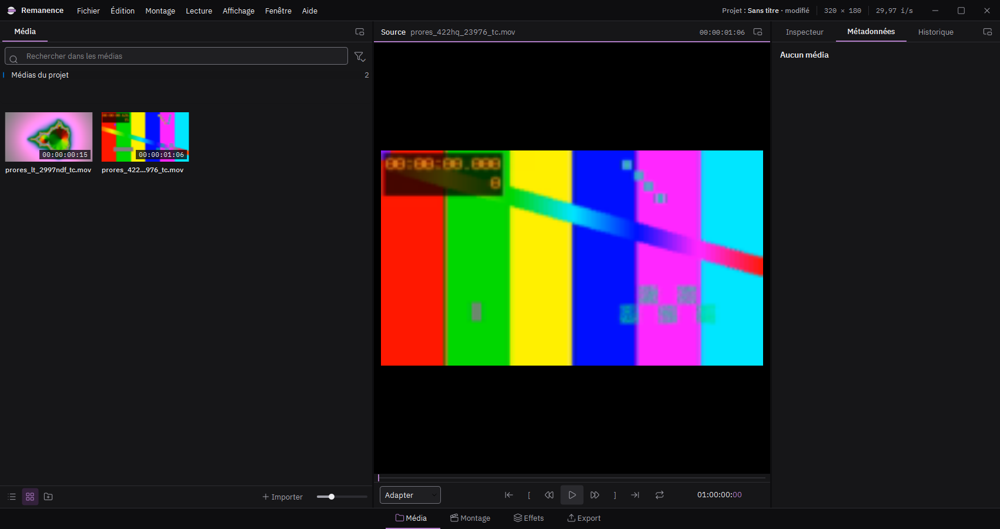
Le panneau Média range les plans importés, en chutiers. Double-cliquez un plan pour le voir dans le moniteur Source. À droite, les métadonnées du plan choisi (format, codec, cadence, timecode).
Montage
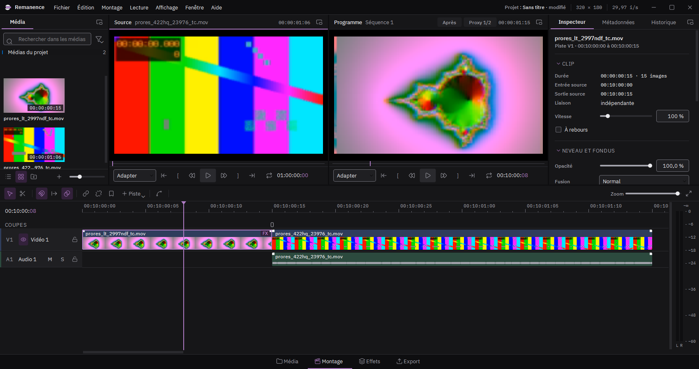
Deux moniteurs côte à côte : la source à gauche, le programme (la séquence montée) à droite. La timeline est dessous, l'inspecteur à droite : il montre les réglages de ce qui est choisi (clip, piste ou séquence).
Effets
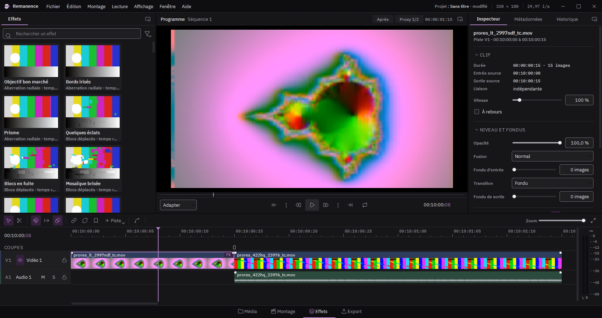
La bibliothèque d'effets prend la gauche : glissez une tuile sur un clip. Le programme est plus grand, et l'inspecteur montre les effets du clip choisi. Fenêtre > Compression ouvre l'analyse du codec d'un clip (images clés, poids des images, vecteurs de mouvement).
Export
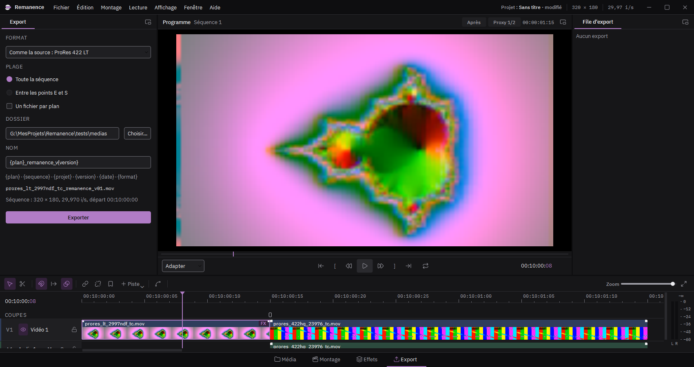
Les réglages d'export à gauche, la file des exports à droite.
Double écran
Affichage > Double écran envoie des panneaux sur un second moniteur : Média, Métadonnées et Historique (comme dans DaVinci Resolve), ou toute la timeline. Ctrl+F montre le programme en plein écran.
Monter des clips
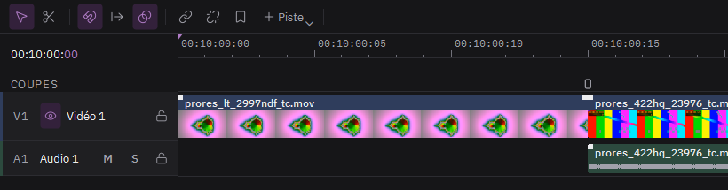
- Importer : Fichier > Importer des médias (Ctrl+I), ou glissez des fichiers dans le panneau Média.
- Poser : glissez un média du panneau Média sur la timeline. Le premier média posé règle la taille et la cadence de la séquence, sauf si vous les avez choisies dans Nouveau projet.
- Choisir un passage : double-cliquez un média pour l'ouvrir dans le moniteur Source, placez un point d'entrée (E) et de sortie (S), puis F9 pour l'insérer à la tête de lecture ou F10 pour écraser.
- Couper : S ou B coupe à la tête de lecture. L'outil de coupe (C) coupe là où vous cliquez ; Échap revient à la sélection.
- Rogner et déplacer : tirez le bord d'un clip pour le raccourcir, glissez-le pour le déplacer. Maj déplace l'image sans son son.
- Enchaîner : posez un clip sur la fin du précédent : ils se fondent l'un dans l'autre. Clic droit sur le clip qui entre, Transition du fondu, pour un volet, des blocs, un décalage RVB ou une coupure de signal à la place du mélange (aussi dans l'inspecteur, sous Fondu d'entrée).
- Copier : Ctrl+C, puis Ctrl+V colle à la tête de lecture. Ctrl+D duplique juste après.
- Scripts (Montage > Scripts, ou clic droit sur un clip) : Scramble découpe les clips choisis en morceaux et mélange leur ordre ; Layer les recopie sur de nouvelles pistes, décalés et de plus en plus transparents, pour un écho. Une même graine redonne le même résultat ; Autre tirage en propose un nouveau.
- Vitesse : dans l'inspecteur, Vitesse (50 % : ralenti, 200 % : accéléré) et À rebours. Le clip garde le même passage de sa source ; ce qui le suit sur la piste se décale.
- Titre : Montage > Ajouter un titre (T), à la tête de lecture. Texte, police IBM Plex, taille, position et couleur dans l'inspecteur ; les effets s'y posent comme sur un clip.
- Imbriquer : Montage > Imbriquer la sélection range les clips choisis dans une nouvelle séquence, qui devient un seul clip. Clic droit, Ouvrir la séquence, pour la retoucher ; la liste des séquences, dans la barre de la timeline, ramène à la principale.
- Rendu sur place (Ctrl+Maj+R) : le clip choisi est calculé avec ses effets dans un fichier ProRes 4444, qui le remplace. Utile pour alléger la lecture ou figer un datamosh.
Ctrl+Z annule, sans limite.
Organiser les pistes
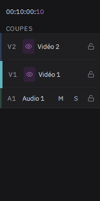
- Nouvelle piste en glissant : lâchez un média, ou glissez un clip, dans la bande juste au-dessus de la piste vidéo du haut. Une piste vidéo se crée et le clip y va.
- Clic droit sur l'en-tête d'une piste : ajouter une piste au-dessus ou en dessous, choisir sa couleur, la renommer, la supprimer.
- Clic droit dans le vide de la timeline : ajouter une piste vidéo ou audio.
- Changer l'ordre : glissez l'en-tête d'une piste sur une autre piste du même type.
- Renommer : double-cliquez sur le nom de la piste.
La piste vidéo du haut passe devant les autres. L'œil masque une piste vidéo, le cadenas la verrouille ; M et S coupent le son ou isolent une piste audio.
Poser un effet
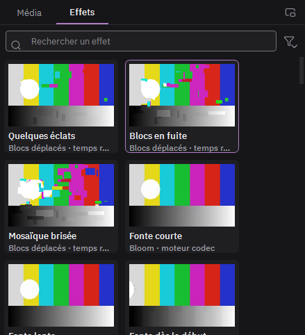
- Ouvrez l'onglet Effets, à côté de Média, ou passez dans l'espace Effets (Maj+3).
- Survolez une tuile pour voir l'effet en mouvement.
- Glissez la tuile sur un clip. Ou sélectionnez le clip et double-cliquez la tuile.
- Réglez l'effet dans l'inspecteur, à droite.
Glissée sur l'en-tête d'une piste, la tuile pose l'effet sur toute la piste. Glissée dans le vide d'une piste vidéo, elle crée un clip d'effet de 5 secondes qui agit sur tout ce qui est dessous.
Le bouton signet d'un effet l'enregistre comme préréglage personnel, dans Mes préréglages.
Animer un effet
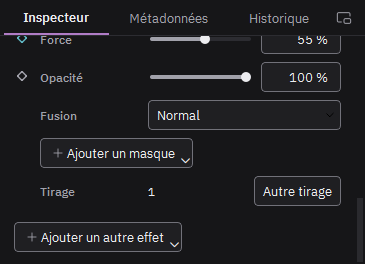
Un effet animé n'agit qu'entre sa première et sa dernière image clé. Avant et après, l'image d'origine reste intacte.
- Placez la tête de lecture au début du passage.
- Cliquez le losange devant un réglage : il se remplit, une image clé est posée.
- Avancez la tête de lecture à la fin du passage.
- Changez la valeur du réglage : une deuxième image clé se pose toute seule.
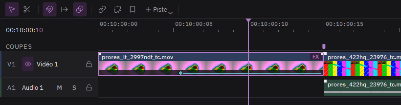
Sur le clip, les losanges et le trait qui les relie montrent où l'effet agit. Cliquez un losange pour y aller, glissez-le pour le déplacer dans le temps. Clic droit sur le losange de l'inspecteur : passage linéaire ou en palier, ou supprimer l'animation.
Le panneau Courbes
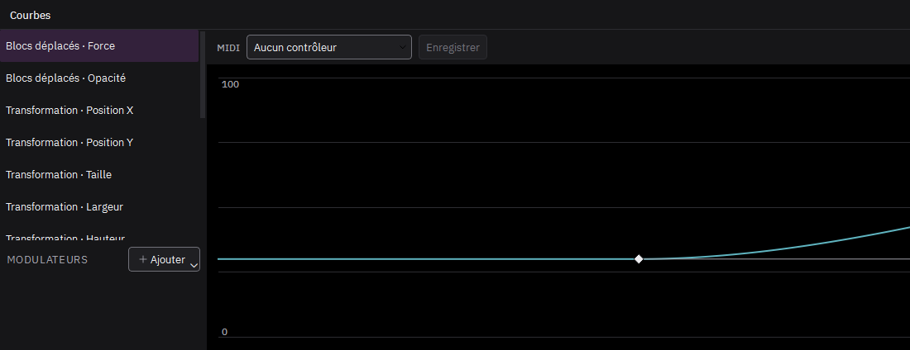
Le bouton Courbes de la barre d'outils de la timeline ouvre le panneau, en onglet à côté de la timeline. À gauche, les réglages du clip choisi ; à droite, la courbe du réglage choisi.
- Double-clic sur le graphe : une image clé de plus.
- Glisser un losange : le déplacer dans le temps et en valeur.
- Clic droit sur un losange : le passage jusqu'à l'image clé suivante, linéaire, palier, lissé ou Bézier.
- En Bézier, tirez les poignées du losange choisi. Alt les détache l'une de l'autre.
- Suppr retire le losange choisi.
Animer un masque
Devant chaque masque de l'inspecteur, le losange anime sa forme. Placez la tête de lecture, cliquez le losange, puis déplacez la tête et modifiez le masque sur l'image : une nouvelle image clé se pose. L'adoucissement et l'expansion s'animent de la même façon.
Faire suivre un sujet par un masque
- Placez la tête de lecture sur une image où le sujet est bien visible, et dessinez le masque autour de lui.
- Cliquez la cible à droite du masque, dans l'inspecteur, puis Vers l'avant ou Vers l'arrière.
- Le suivi se calcule en arrière-plan, jusqu'au bout du clip. Chaque position devient une image clé de la forme du masque.
Le suivi regarde l'image sans ses effets : un glitch ne le perd pas. Si le sujet sort de l'image ou se cache, le suivi s'arrête là et l'indique en bas de la fenêtre. Corrigez alors le masque à la main, puis relancez le suivi depuis cette image.
Les modulateurs
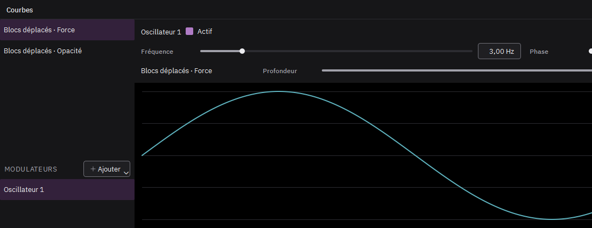
Un modulateur fait varier un réglage tout seul, en plus de ses images clés : une oscillation, un hasard qui ondule, des pulsations au tempo.
- Dans le panneau Courbes, clic droit sur un réglage, puis Moduler par et un nouveau modulateur : Oscillateur, Aléatoire lissé, Tempo ou Audio.
- Choisissez le modulateur dans la liste du bas : ses réglages s'affichent au-dessus du graphe.
- Oscillateur : forme (sinus, triangle, carré, dents de scie), fréquence, phase.
- Aléatoire lissé : vitesse ; « Autre tirage » change le hasard.
- Tempo : battements par minute, division, déclin de chaque impulsion, décalage.
- Audio : le niveau du son d'une piste (ou de toutes), en volume ou dans les graves, les médiums ou les aigus ; sensibilité, attaque (vitesse de montée), relâche (vitesse de retombée).
- La profondeur dit de combien le modulateur fait bouger le réglage, en % de sa plage. Négative, elle l'inverse.
Un même modulateur peut piloter plusieurs réglages : clic droit sur un autre réglage, Moduler par, puis son nom. Sur la courbe d'un réglage modulé, le pointillé montre les images clés et le trait plein le résultat.
Les modulateurs suivent le temps de la séquence. Le rendu est toujours le même : deux exports donnent les mêmes images.
Enregistrer un contrôleur MIDI
Avec un contrôleur MIDI branché, choisissez un réglage dans le panneau Courbes : la barre MIDI s'affiche au-dessus du graphe.
- Choisissez le contrôleur, puis cliquez Enregistrer.
- Bougez le bouton ou le curseur voulu : c'est lui qui est retenu (son numéro s'affiche, par exemple CC 21).
- Lancez la lecture et jouez : chaque mouvement pose une image clé à la tête de lecture.
- Cliquez de nouveau Enregistrer pour arrêter.
Le geste devient une courbe ordinaire, à retoucher comme les autres : le rendu reste le même d'un export à l'autre.
Automator (Montage > Scripts) pose des images clés au hasard sur les réglages cochés d'un effet du clip choisi, à intervalle régulier. Elles se retouchent ensuite comme les autres.
Faire baver un plan dans le suivant
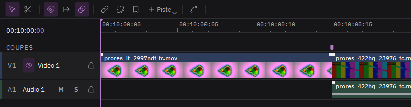
C'est la transition datamosh : l'image du premier plan reste et se déforme avec le mouvement du second.
- Posez deux clips bout à bout sur la même piste vidéo, sans trou entre eux.
- Dans la bande Coupes, au-dessus des pistes, cliquez le petit rectangle juste au-dessus du raccord. Il devient mauve.
- Attendez que « Calcul… » disparaisse du clip, puis lisez le passage.
La zone hachurée au début du second clip montre la durée de la bavure. Tirez son bord droit pour l'allonger. Dans l'inspecteur, la section Transition datamosh règle aussi la taille des blocs.
Les autres rectangles de la bande Coupes marquent les changements de plan à l'intérieur d'une vidéo. Un clic fait baver le plan d'avant dans le suivant, au même endroit.
Effets codec et scripts FFglitch
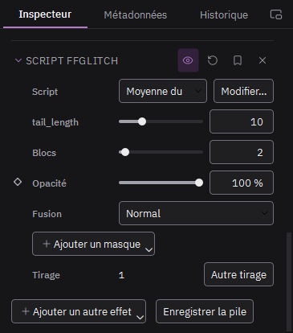
Les effets marqués « moteur codec » abîment la vidéo compressée elle-même : bavure, fonte des pixels, vecteurs de mouvement déformés. Ils se calculent en arrière-plan ; le badge « Calcul… » reste sur le clip le temps du calcul.
- Vecteurs de mouvement : amplifier, inverser (valeur négative), figer un axe (0 %), décaler, lisser, bruiter le mouvement.
- Écho de mouvement, Zoom de mouvement, Saccades : le mouvement répété, aspiré vers un centre, ou inversé par à-coups.
- Transfert de mouvement : le clip prend le mouvement du clip posé sur la piste juste au-dessus. Masquez cette piste avec l'œil, son mouvement sert quand même.
- Script FFglitch (famille Scripts) : un script de la bibliothèque. Les nombres déclarés en haut du script deviennent des réglages. « Modifier… » ouvre le script pour le changer.
Vos propres scripts, par exemple ceux de dd_GlitchAssist : Fichier > Importer des scripts FFglitch, puis choisissez leur dossier.
Lire la compression d'un clip
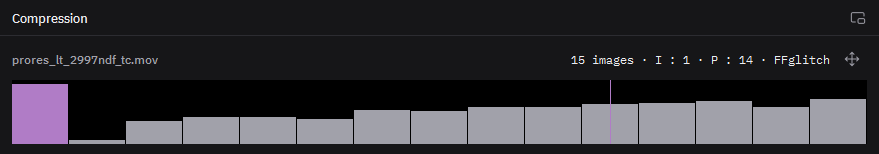
Dans l'espace Effets, Fenêtre > Compression ouvre ce panneau sous le programme. Sélectionnez un clip vidéo : chaque barre est une image, haute comme son poids.
- Barre mauve : une image clé, image complète.
- Barre grise : une image qui ne contient que le mouvement depuis la précédente.
- Contour mauve : une image clé supprimée, là où le plan bave.
Cliquez une barre pour y aller. Double-cliquez une image clé pour la supprimer ou la rétablir. Le bouton à droite dessine sur le programme le mouvement que le datamosh va réutiliser.
Exporter
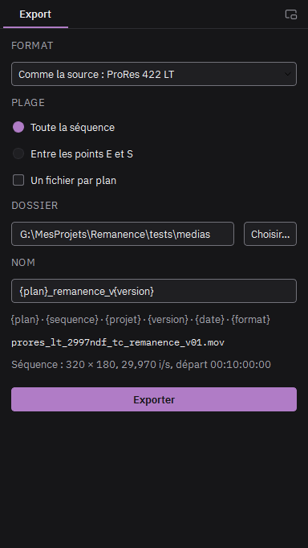
- Passez dans l'espace Export (Maj+4 ou Ctrl+E).
- Choisissez le format. ProRes 422 HQ garde la qualité pour la suite du montage.
- Choisissez le dossier, puis le nom : un modèle où {plan} devient le nom du média, {version} le premier numéro libre (01, 02…), {date} la date du jour. Le nom obtenu s'affiche dessous.
- Cliquez Exporter. L'export rejoint la file d'export, à droite, et se calcule en arrière-plan.
Un fichier par plan : chaque clip de la piste vidéo du bas devient un fichier, nommé d'après son média.
Les images sans effet sont recopiées telles quelles depuis la source. Après l'export, le rapport vérifie la durée, la cadence, la taille et le timecode.
Échanger avec le monteur
- Fichier > Importer un montage : une EDL ou un FCP XML devient une séquence. Chaque plan est retrouvé parmi les médias importés par son nom et posé avec son timecode ; un plan sans média devient un marqueur.
- Fichier > Exporter une liste de remplacement : les plans exportés pendant la séance, en EDL ou FCP XML, à leur place dans le montage. Le monteur l'importe pour relier les nouveaux plans.
- Fichier > Exporter l'image (Ctrl+Maj+E) : l'image à la tête de lecture, en PNG 16 bits ou en EXR.
Comparer avant et après
Le badge Après, en haut du moniteur Programme (ou Affichage > Avant / après), change ce que montre le programme :
- Avant : la séquence sans aucun effet, ni datamosh, ni transition glitch. Alt+A bascule entre avant et après.
- Volet : l'avant à gauche du trait, l'après à droite. Tirez le trait dans l'image.
- Côte à côte : l'avant à gauche, l'après à droite.
LUT d'affichage
Affichage > LUT d'affichage > Charger un fichier .cube : les deux moniteurs passent par la LUT, pratique pour regarder des rushs en log. Le rendu et l'export ne la voient jamais. Le badge LUT, à côté, la retire ou en choisit une autre ; Remanence la retrouve au lancement suivant.
Courbes, modulateurs et suivi
Courbes
Le panneau Courbes (bouton en forme de courbe dans la barre de la timeline, ou Fenêtre > Courbes) montre les réglages animés du clip choisi. Double-cliquez pour ajouter une image clé, glissez-la pour la déplacer, clic droit pour changer le passage (linéaire, palier, lissé, Bézier) ; Suppr la retire. En Bézier, les poignées règlent la forme de la courbe ; Alt les sépare.
Modulateurs
Un modulateur anime un réglage tout seul, sans images clés. Clic droit sur un réglage dans le panneau Courbes, puis Moduler par :
- Oscillateur : sinus, triangle, carré ou dents de scie, à la fréquence voulue ;
- Aléatoire lissé : des valeurs au hasard qui s'enchaînent en douceur ; Autre tirage en propose d'autres ;
- Tempo : une impulsion à chaque temps, au tempo du morceau ;
- Audio : le niveau du son d'une piste, dans les graves, les médiums ou les aigus.
La profondeur dit combien le modulateur agit sur le réglage. Le rendu reste le même d'un export à l'autre.
Contrôleur MIDI
Branchez un contrôleur MIDI, ouvrez le panneau Courbes sur un réglage, choisissez le contrôleur dans la barre MIDI et cliquez Enregistrer. Bougez un bouton : c'est lui qui est retenu. Lancez la lecture et jouez : chaque mouvement devient une image clé.
Suivi d'un masque
Un masque peut suivre un objet qui bouge. Placez la tête de lecture où l'objet est bien visible, entourez-le avec le masque, puis cliquez le bouton Suivre du masque (en forme de cible) dans l'inspecteur : vers l'avant ou vers l'arrière. Le suivi s'arrête s'il perd l'objet ; le message dit où.
Catalogue des effets
Chaque effet se règle dans l'inspecteur ; ses préréglages sont dans la bibliothèque d'effets. « Temps réel » : calculé à l'image, à la lecture. « Calculé à part » : calculé en arrière-plan, gardé en cache.
Datamosh
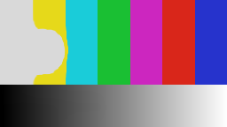
Bavure par flux optique
Calculé à part
Réglages : Image de référence, Force, Lissage, Rafraîchissement.
Préréglages : Matière qui glisse, Bavure qui se dissipe, Coulée violente.

Bloom
Calculé à part
Réglages : Instant, Durée, Blocs.
Préréglages : Fonte courte, Fonte lente, Fonte dès le début.
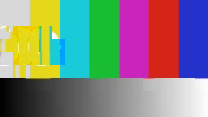
Inversion par saccades
Calculé à part
Réglages : Fréquence, Durée, Intensité, Blocs.
Préréglages : Saccades rares, Longues saccades, Saccades fréquentes.
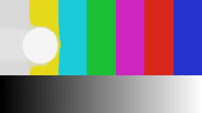
Persistance
Calculé à part
Réglages : Persistance, Force, Lissage, Éclaircir.
Préréglages : Traînées, Fantômes lumineux, Écho court.
Suppression d'images clés
Calculé à part
Réglages : Début, Fin, Blocs.
Préréglages : Bavure aux coupes, Bavure grossière, Seconde moitié.
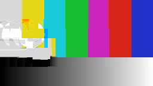
Transfert de mouvement
Calculé à part
Réglages : Force, Blocs.
Préréglages : Mouvement emprunté, Mouvement mêlé, Mouvement en blocs.
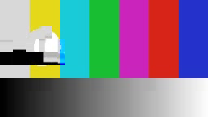
Vecteurs de mouvement
Calculé à part
Réglages : Horizontal, Vertical, Décalage X, Décalage Y, Moyenne, Bruit, Blocs.
Préréglages : Mouvement amplifié, Mouvement inversé, Glissement horizontal, Traînée, Dérive, Grouillement.
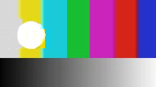
Zoom de mouvement
Calculé à part
Réglages : Force, Centre X, Centre Y, Blocs.
Préréglages : Aspiration, Explosion, Zoom décentré.
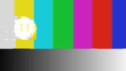
Zoom par saccades
Calculé à part
Réglages : Fréquence, Durée, Intensité, Blocs.
Préréglages : Coups de zoom, Grands coups de zoom, Zoom nerveux.
Écho de mouvement
Calculé à part
Réglages : Retard, Retour, Blocs.
Préréglages : Écho, Échos qui s'accumulent, Écho lointain.
Corruption
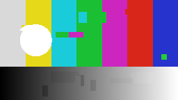
Blocs déplacés
Temps réel
Réglages : Force.
Préréglages : Quelques éclats, Blocs en fuite, Mosaïque brisée.
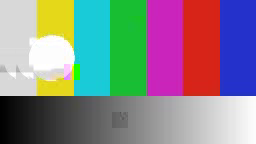
Databending
Calculé à part
Réglages : Force, Blocs.
Préréglages : Grains de sel, Signal abîmé, Flux brisé.
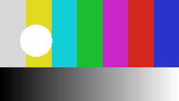
JPEG extrême
Temps réel
Réglages : Force, Blocs, Couleur.
Préréglages : Image trop compressée, Envoyé dix fois, Gros carrés.
Macroblocs
Calculé à part
Réglages : Blocs.
Préréglages : Blocs visibles, Gros blocs, Mosaïque grossière.
Couleur
Aberration radiale
Temps réel
Réglages : Force, Étalement, Centre X, Centre Y.
Préréglages : Objectif bon marché, Bords irisés, Prisme.
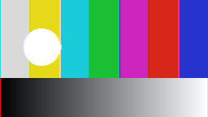
Décalage RVB
Temps réel
Réglages : Force.
Préréglages : Frange légère, Couleurs dédoublées, Anaglyphe.
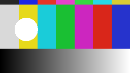
Inversion par bandes
Temps réel
Réglages : Force, Bandes, Cadence, Vertical.
Préréglages : Quelques négatifs, Stroboscope, Code-barres.
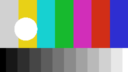
Postérisation et tramage
Temps réel
Réglages : Force, Tramage, Trame.
Préréglages : Affiche, Console 8 bits, Journal.
Pixels
Pixellisation
Temps réel
Réglages : Force, Proportion, Cadence.
Préréglages : Mosaïque fine, Censure, Pixels épars.
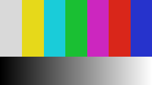
Slit-scan
Calculé à part
Réglages : Profondeur, Inverser, Vertical.
Préréglages : Temps qui coule, Rideau vertical, Grande torsion.
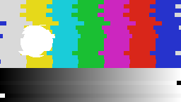
Tranches décalées
Temps réel
Réglages : Force, Tranches, Proportion, Cadence, Vertical.
Préréglages : Légère cassure, Image en lamelles, Coupe franche.
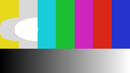
Tri de pixels
Temps réel
Réglages : Force, Vertical.
Préréglages : Lumières étirées, Fonte des clairs, Coulure verticale.
Signal
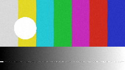
Cassette VHS
Temps réel
Réglages : Force.
Préréglages : Cassette usée, Copie de copie, Bande massacrée.
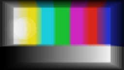
Feedback
Calculé à part
Réglages : Retour, Zoom, Rotation, Décalage X, Décalage Y, Teinte, Éclaircir.
Préréglages : Tunnel, Spirale, Écho psychédélique.
Grain et bruit
Temps réel
Réglages : Force, Taille, Couleur.
Préréglages : Pellicule fine, Pellicule poussée, Capteur dans le noir.
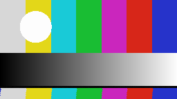
Perte de synchro TV
Temps réel
Réglages : Force, Défilement, Déchirement.
Préréglages : Image qui flotte, Antenne mal réglée, Plus de signal.
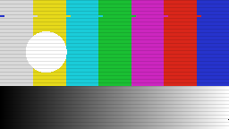
Scanlines
Temps réel
Réglages : Force.
Préréglages : Écran discret, Tube cathodique, Image qui décroche.
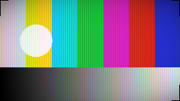
Écran CRT
Temps réel
Réglages : Force, Courbure, Luminophores.
Préréglages : Moniteur de contrôle, Téléviseur du salon, Borne d'arcade.
Scripts
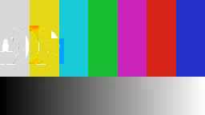
Script FFglitch
Calculé à part
Réglages : les réglages du script.
Préréglages : Chute verticale, Glissement horizontal, Moyenne du mouvement, Panoramique.
Raccourcis clavier
Ils sont aussi écrits dans les menus, à côté de chaque commande. Convention de Vegas Pro : les flèches avancent d'une image, la molette zoome la timeline.
Fichier
| Nouveau projet | Ctrl+N |
| Ouvrir un projet… | Ctrl+O |
| Enregistrer | Ctrl+S |
| Enregistrer sous… | Ctrl+Maj+S |
| Importer des médias… | Ctrl+I |
| Exporter la séquence… | Ctrl+E |
| Exporter l'image… | Ctrl+Maj+E |
| Quitter | Ctrl+Q |
Édition
| Annuler effet décalage rvb | Ctrl+Z |
| Rétablir | Ctrl+Y |
| Copier | Ctrl+C |
| Coller | Ctrl+V |
| Dupliquer | Ctrl+D |
| Tout sélectionner | Ctrl+A |
Montage
| Outil de sélection | V |
| Outil de coupe | C |
| Couper à la tête de lecture | S |
| Supprimer les clips sélectionnés | Suppr |
| Dissocier son et image | U |
| Lier la sélection | G |
| Ripple | Ctrl+L |
| Aimantation | F8 |
| Insérer depuis la source | F9 |
| Écraser depuis la source | F10 |
| Ajouter un marqueur | M |
| Ajouter un titre | T |
| Rendu sur place | Ctrl+Maj+R |
Lecture
| Lire / Pause | Space |
| Lecture arrière | J |
| Arrêt | K |
| Lecture avant | L |
| Lecture en boucle | Ctrl+B |
| Image précédente | Left |
| Image suivante | Right |
| Une seconde en arrière | Maj+Left |
| Une seconde en avant | Maj+Right |
| Coupe précédente | Up |
| Coupe suivante | Down |
| Marqueur précédent | Ctrl+Left |
| Marqueur suivant | Ctrl+Right |
| Aller au début | Home |
| Aller à la fin | End |
| Basculer entre source et programme | Q |
| Point d'entrée | I |
| Point de sortie | O |
| Effacer les points d'entrée et de sortie | Alt+X |
Affichage
| Espace Média | Maj+1 |
| Espace Montage | Maj+2 |
| Espace Effets | Maj+3 |
| Espace Export | Maj+4 |
| Basculer avant / après | Alt+A |
| Zoom avant | + |
| Zoom arrière | - |
| Tout voir | Ctrl+0 |
| Plein écran | F11 |
| Un seul moniteur | Ctrl+Maj+Q |
| Programme en plein écran | Ctrl+F |
Aide
| Prise en main… | F1 |
| Guide | Maj+F1 |
Dépannage
Le journal
Remanence note dans un journal ce qu'il fait et chaque erreur, avec le détail technique. Aide > Ouvrir le journal ouvre son dossier : envoyez le fichier remanence.log avec une phrase sur ce que vous faisiez. Un plantage brutal laisse aussi un fichier plantage.log.
Le diagnostic
Pour vérifier que le programme a tout ce qu'il lui faut, lancez Remanence.exe --diagnostic (depuis une invite de commandes, dans le dossier du programme). Il contrôle les effets, les ressources, les formats d'échange, FFmpeg, la carte graphique, l'interface, puis monte, enregistre et exporte un petit projet d'essai. Le résultat est écrit dans diagnostic.txt, dans le dossier du journal.
Pas d'effets à l'image
Les effets demandent une carte graphique compatible OpenGL 4.3. Sans elle (pilote ancien, bureau à distance), Remanence monte et exporte, mais sans effets. Mettez à jour le pilote de la carte graphique.
Un effet de datamosh ne fait rien
Les effets propres à FFglitch (vecteurs de mouvement, transfert de mouvement, scripts) en ont besoin : Aide > Installer FFglitch. Les autres effets de datamosh se calculent en arrière-plan : le badge « Calcul… » reste sur le clip le temps du calcul.
L'export n'est pas conforme
Le rapport d'export compare le fichier à la séquence : durée en images, cadence, taille, timecode. Une ligne en défaut dit laquelle. Le format « Comme la source » donne le résultat le plus fidèle.